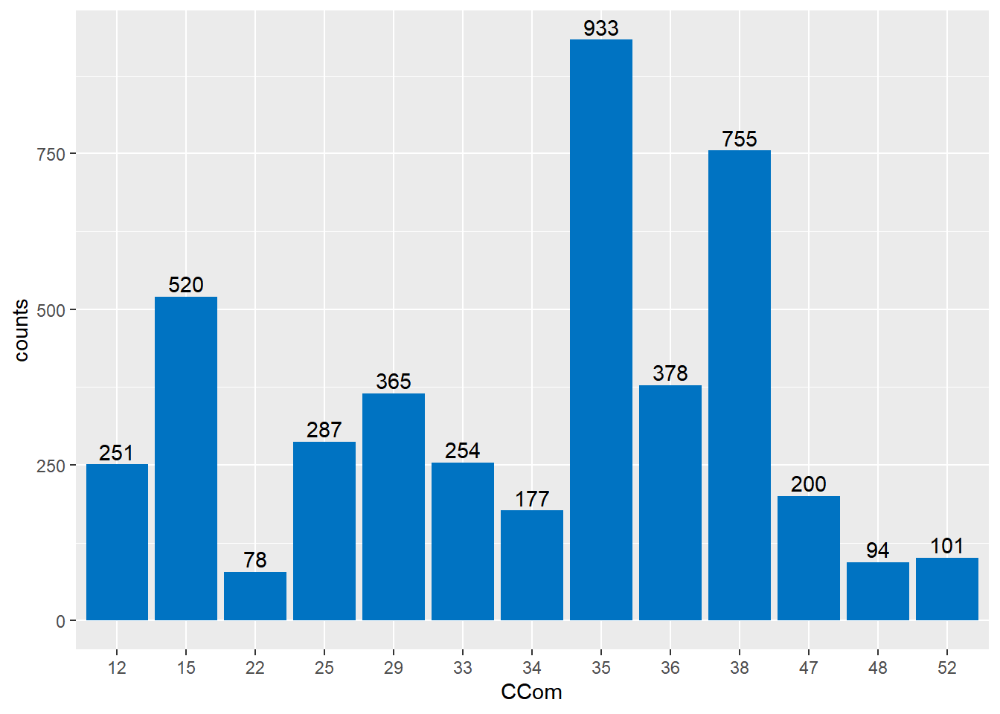

1 Résumé
L’objectif de ce travail est de construire un modèle hédonique des loyers sur Tahiti et Moorea, c’est-à-dire trouver une fonction des caractéristiques du logement permettant d’estimer le loyer de celui-ci. Ce travail est une tentative de reproduction d’un travail similaire de l’Office Fédérale Suisse (Fourcade, 2022) sur les données recueillies par l’Institut de la Statistique de Polynésie Française (ISPF).
Le modèle construit est Log-linéaire. Sa forme est décrite ci-dessous, à savoir que certaines caractéristiques des logements ne sont pas codées par une seule variable mais par plusieurs variables indicatrices (dummy variables) des différentes modalités de ces caractéristiques. Les coefficients du modèle sont présentés en annexe [Modèle]. Les coefficients du modèle ont été estimés par la méthode des carrés ordinaire en prenant 4393 observations de loyers sur 1232 logements différents.
\begin{align*} \log(\mathrm{loyer}) =&\beta_0 + \beta_1 \; \mathrm{commune} & \\ &+ \beta_2 \; \mathrm{nombre\ de\ chambre} \;+ \beta_3 \; \mathrm{surface\ habitable}\\ &+ \beta_4 \; \mathrm{meublé} \\ &+ \beta_5 \; \mathrm{piscine} \; + \beta_6 \; \mathrm{type\ de\ construction}\\ &+\beta_7 \; \mathrm{taxes} \;+ \beta_{8} \; \mathrm{charges\ copro} \;+ \beta_{9} \; \mathrm{charge\ jardinage} \;+ \beta_{10} \; \mathrm{charge\ ordures} \;+ \beta_{11} \; \mathrm{charge\ gardiennage}\\ &+ \varepsilon \end{align*}
Pour choisir les variables explicatives retenues dans ce modèle, on a calculé plusieurs centaines de modèles incluant plus ou moins de variables explicatives avant de comparer ces modèles par le biais du Bayesian Information Criterion et de l’Akaike Information Criterion.
Le R^2 ajusté de ce modèle est de 0.7163 sur les données d’entraînement mais chute à 0.5996 sur les loyers relevés entre 2015 et 2018 ce qui semble indiquer un léger overfit. Le modèle reste tout de même assez performant, ayant une erreur moyenne d’estimation des loyers de 20 000 xpf environ (environ 170 €).
Les résidus ont une espérance nulle, ne sont pas corrélés aux estimations des loyers, ne suivent pas une loi normale et n’ont pas une variance constante (hétéroscédasticité). L’hétéroscédasticité et la non normalité invalide les t-test des coefficients du modèle.
Cependant, les résidus suivent une distribution quasi-normale et ont une variance qui semble assez stable (faible hétéroscédasticité), aussi on peut tout de même garder le modèle développé mais il convient d’analyser ses prévisions avec précaution.
On arrive à la conclusion que les données récoltées par l’ISPF sont suffisantes pour construire un modèle hédonique mais que celles-ci nécessitent un traitement particulier. En effet, la quantité importante d’observations mobilisables peut paraître artificielle à la vue du faible nombre de logements interrogés (plusieurs observations donnant exactement les mêmes informations mais à des dates différentes).
Enfin, il est proposé de réaliser une régression linéaire pondérée pour mieux mobiliser les données disponibles. Une telle régression est réalisée et donne des résultats similaires à ceux de la régréssion linéaire usuelle.
2 Avant-propos
2.1 Motivation & objectif
Dans le calcul d’un indice des prix à la consommation, le sous indice des prix du groupe 4.1 de la COICOP se rapportant aux loyers d’habitation est particulièrement difficile à traiter. En effet, le marché locatif est caractérisé par une forte hétérogénéité des biens.
Les instituts de statistiques procèdent généralement à une enquête par échantillonnage stratifié de manière à ce que les biens interrogés soient représentatifs du parc locatif courant. Cependant, des biens d’une même strate peuvent avoir des caractéristiques très différentes1. Ces différences de caractéristiques peuvent, dans le cadre d’un renouvellement des logements suivis, entraîner une variation de l’indice des loyers non représentative d’une variation globale des loyers. Aussi, plusieurs instituts utilisent des modèles hédoniques pour éviter ce phénomène. On peut citer l’Office fédérale de la Statistique (OFS en Suisse) qui procède à un réajustement des loyers basé sur un modèle hédonique ou Statistiques Canada qui calcule l’indice des loyers avec un tel modèle.
Les modèles utilisés par les instituts de statistiques requièrent souvent un jeu de données très grand pour pouvoir déterminer les coefficients de ces modèles (près de cent mille observations pour l’OFS, dix mille observations pour Statistiques Canada).
Le but de ce travail est de voir si les données récupérées par l’ISPF permettent de réaliser un modèle similaire, propre à la Polynésie française. En particulier, on s’inspire beaucoup du travail réalisé par l’OFS et présenté dans Fourcade, L. (2022), Indice des loyers : rapport méthodologique, Publication OFS. On se permet de mentionner aussi Keshishbanoosy & Taylor (2019), New approach for estimating the rent component of the Consumer Price Index qui présente, entre autre, le modèle hédonique des loyers développé par Statistique Canada.
2.2 Théorie de la demande hédonique
L’hypothèse centrale des modèles hédoniques est que le prix du bien ou service considéré est déterminé par ses caractéristiques. Ce genre de modèle est courant dans le domaine de l’immobilier.
Les instituts de statistiques du Canada et de la Suisse ont tous deux choisis comme modèle hédonique des modèles de forme Log-Linéaire, c’est-à-dire que le logarithme du loyer est égal à la somme d’une fonction affine en les caractéristiques du logement et d’un bruit. On suppose donc la forme suivante :
\ln(\mathrm{loyer}) = \beta_0 + \sum_{c\, \in \, \{\mathrm{variables\ explicatives}\}} \beta_c \; c \; \;+ \varepsilon
Ces instituts réalisent ensuite une régression linéaire de manière à déterminer les coefficients \beta.
2.3 Enquête Loyers et Charges de l’ISPF
L’ISPF relève les loyers dans le cadre de l’Enquête Loyers et Charges. Le questionnaire de cette enquête est disponible en ligne2. Cette enquête est réalisée sur Tahiti et Moorea uniquement. L’échantillon est présentement de 660 logements avec interrogation semestrielle et les non-réponses sont gérées par substitution3.
De cette enquête on peut obtenir 20 variables qui semblent être caractéristiques d’un logement. On a rangé ces variables par types (spatiale, caractéristiques du bail, de surface etc.). Les variables et leurs types sont disponibles en annexe [Variables].
Il convient de remarquer que le format de l’enquête sans renouvellement et avec gestion de non-réponse par substitution peut rendre les données récoltées moins représentatives de la population générale. Aussi, le modèle développé ici peut être moins performant sur de nouvelles données dans le cas d’un renouvellement des logements interrogés.
3 Méthodologie
3.1 Traitement des données
On a pris en entrée une table de données contenant les réponses au questionnaire de l’enquête loyers et charges. Celle-ci comportait des informations personnelles ainsi que des entrées incohérentes. Cette table contient 4393 observations pour 1229 logements différents entre 2021 et 2024.
On a supprimé toutes les informations personnelles (nom, prénom, numéro de téléphone, etc.) des locataires ainsi que les informations les plus précises sur la localisation des logements contenues dans cette table. Pour la localisation, on ne conserve que la commune et le district des logements.
Dans la table, il y a trois informations sur le loyer : le loyer au décembre précédent, le loyer présent hors charges, le loyer présent charges comprises. Sur de nombreuses observations, le loyer hors charges est inférieur au loyer charges comprises. Aussi, on a décidé, de manière à avoir le loyer toutes charges comprises, de prendre le maximum entre les trois loyers fournis.
Enfin, on a remplacé les réponses invraisemblables (surface nulle, plus de 100 pièces, etc.) par des Not Available. On a aussi regroupé les modalités minoritaires des variables portant sur le nombre de pièces ensembles4.
La majorité des données que l’on utilise dans notre travail sont des variables catégorielles (pouvant prendre un nombre fini de valeurs). Par exemple, on code par un chiffre compris entre 1 et 7 le type de logement. Utiliser ce code dans une régression rendrait difficile l’interprétation des coefficients du modèle, aussi, pour intégrer dans notre régression des variables catégorielles, on utilise des dummy variables, ou variables muettes/fictives/indicatrices.
Le principe est le suivant : étant donné une variable catégorielle var à n modalités numérotées de 1 à n, on construit n-1 variables indicatrices5 (nos dummy variables) var_1, var_2, … ,var_n-1 où var_i prend la valeur 1 si var prend la valeur i, 0 sinon.
On calcule des dummy variables pour toutes nos variables catégorielles.
3.2 Détermination du modèle
On rappelle que l’on cherche à trouver un modèle de la forme :
\ln(\mathrm{loyer}) = \beta_0 + \sum_{c\, \in \, \{\mathrm{variables\ explicatives}\}} \beta_c \; c \; \;+ \varepsilon
Où les coefficients \beta seront évalués par la méthode des moindres carrés ordinaire.
Avec la forme de modèle choisie, on peut calculer plusieurs modèles en prenant, ou non, certaines variables explicatives en compte. Mettre beaucoup de variables explicatives dans un modèle permet d’améliorer les prédictions du modèle sur les données d’entrainement, au risque que les prédictions du modèle sur d’autres données soient moins bonnes. Mettre trop peu de variables explicatives dans un modèle risque de réduire la qualité des prédictions du modèle. Aussi il nous faut choisir ni trop, ni trop peu de covariables dans notre modèle.
Pour choisir un modèle ni trop simple, ni trop compliqué, on procède ici comme suit : on calcule plusieurs modèles, pour chacuns on calcule des statistiques qui nous permettent de les comparer, on choisit le meilleur modèle selon ces statistiques, on modifie le modèle retenue de manière à l’améliorer, on supprime à la main les variables explicatives qui nous semble superflue.
Cette démarche est décrite plus précisément ci-après.
Ne pouvant calculer 20! modèles, on sélectionne plusieurs modèles qui peuvent être intéressants. Pour sélectionner les modèles, on a tout d’abord regroupé les variables explicatives selon leur type (spatiale, caractéristique du bail, etc.). Ces groupes de variables sont présentés dans la première table de l’annexe [Variables]. Ensuite, pour chacun de ces groupes de variables, on construit plusieurs paquets de variables. Les paquets de variables propres à chaque groupe sont présentés dans les tables de l’annexe [Paquets de variables]. Enfin, l’ensemble des modèles que l’on va calculer et comparer est construit en choisissant pour chaque modèle un paquet de variables par groupe de variables.
Pour chaque modèle calculé, on calcule plusieurs statistiques. En particulier, on calcule les Bayesian Information Criterion (BIC) et Akaike Information Criterion (AIC) de chaque modèle6. Ces valeurs permettent de comparer différents modèles. Elles sont croissantes en la complexité du modèle et décroissantes en la vraissemblance du modèle. Ainsi en prenant le modèle qui a les plus petites BIC et AIC on choisit un modèle qui colle bien aux données tout en étant le plus simple possible (ce qui permet d’éviter l’overfit).
Pour chaque modèle on calcule aussi le R^2, le R^2 ajusté, ainsi que les p-valeurs de plusieurs tests sur les résidus. Aucune de ces p-valeurs n’a permis de départager les modèles car tous les modèles ont eu des résultats similaires sur leurs résidus.
Le modèle retenu a le plus petit BIC et le second plus petit AIC. On a choisis ce modèle plutôt que le modèle avec le plus petit AIC car le BIC a tendance à plus pénaliser la complexité du modèle que l’AIC.
Le modèle retenu est ensuite affiné en retirant des variables explicatives tant que cela permet de diminuer son BIC.
Ci-dessous, le résumé du modèle retenu.
Call:
lm(formula = formula, data = dt)
Residuals:
Min 1Q Median 3Q Max
-1.16728 -0.12828 0.00625 0.13055 0.86950
Coefficients:
Estimate Std. Error t value Pr(>|t|)
(Intercept) 11.5238955 0.0138555 831.718 < 2e-16 ***
CCom_12 -0.0326905 0.0164515 -1.987 0.046976 *
CCom_15 -0.0673894 0.0125988 -5.349 9.31e-08 ***
CCom_22 -0.3404533 0.0265365 -12.830 < 2e-16 ***
CCom_25 -0.1756236 0.0156470 -11.224 < 2e-16 ***
CCom_29 -0.2439936 0.0147124 -16.584 < 2e-16 ***
CCom_33 -0.2442892 0.0163847 -14.910 < 2e-16 ***
CCom_34 -0.3189274 0.0188706 -16.901 < 2e-16 ***
CCom_36 -0.0095982 0.0139852 -0.686 0.492554
CCom_38 -0.0187226 0.0112073 -1.671 0.094880 .
CCom_47 -0.4016285 0.0179881 -22.327 < 2e-16 ***
CCom_48 -0.2870638 0.0244855 -11.724 < 2e-16 ***
CCom_52 -0.4846808 0.0244629 -19.813 < 2e-16 ***
CConstruction_1 -0.1863756 0.0227348 -8.198 3.20e-16 ***
CConstruction_2 0.0466874 0.0525698 0.888 0.374535
CConstruction_4 -0.1557524 0.0481247 -3.236 0.001219 **
CConstruction_5 -0.1848584 0.0113031 -16.355 < 2e-16 ***
CConstruction_7 -0.0935166 0.0615281 -1.520 0.128609
NBChambre_0 -0.3735791 0.0126449 -29.544 < 2e-16 ***
NBChambre_1 -0.1795045 0.0103328 -17.372 < 2e-16 ***
NBChambre_3 0.1863373 0.0103398 18.021 < 2e-16 ***
NBChambre_4 0.1947712 0.0191956 10.147 < 2e-16 ***
NBChambre_5plus 0.2551120 0.0360533 7.076 1.72e-12 ***
COccupation_2 -0.0785984 0.0078471 -10.016 < 2e-16 ***
COccupation_3 -0.4027826 0.0839091 -4.800 1.64e-06 ***
CDestloyer_2 0.0175371 0.0166024 1.056 0.290890
CDestloyer_3 0.0046907 0.0104398 0.449 0.653232
CDestloyer_4 -0.0616314 0.0738922 -0.834 0.404287
IsPiscine 0.3215576 0.0108189 29.722 < 2e-16 ***
IsTaxeseauxord -0.0363281 0.0084388 -4.305 1.71e-05 ***
IsChargeCopro 0.1051601 0.0292540 3.595 0.000328 ***
IsEntretienJardin 0.0702418 0.0086160 8.153 4.63e-16 ***
IsGardien 0.0583800 0.0129360 4.513 6.56e-06 ***
IsOrdureMenage 0.0758488 0.0084110 9.018 < 2e-16 ***
SurfaceH 0.0024081 0.0001198 20.097 < 2e-16 ***
---
Signif. codes: 0 '***' 0.001 '**' 0.01 '*' 0.05 '.' 0.1 ' ' 1
Residual standard error: 0.2186 on 4315 degrees of freedom
Multiple R-squared: 0.7228, Adjusted R-squared: 0.7206
F-statistic: 331 on 34 and 4315 DF, p-value: < 2.2e-16On décide de supprimer la variable explicative CDestloyer des variables explicatives du modèle car les dummy variables associées à cette variable explicative ont toutes des p-valeurs très élevées. Ce choix est aussi motivé par le faible nombre d’observations où la variable CDestloyer vaut 2,3 ou 4 (voir histogramme ci-dessous).
4 Modèle
4.1 Forme du modèle
Le modèle retenu dans la partie précédente est le suivant :
\begin{align*}
\log(\mathrm{loyer}) =&\beta_0 + \beta_1 \; \mathrm{commune} & \\
&+ \beta_2 \; \mathrm{nombre\ de\ chambre} \;+ \beta_3 \; \mathrm{surface\ habitable}\\
&+ \beta_4 \; \mathrm{meublé} \\
&+ \beta_5 \; \mathrm{piscine} \; + \beta_6 \; \mathrm{type\ de\ construction}\\
&+\beta_7 \; \mathrm{taxes} \;+ \beta_{8} \; \mathrm{charges\ copro} \;+ \beta_{9} \; \mathrm{charge\ jardinage} \;+ \beta_{10} \; \mathrm{charge\ ordures} \;+ \beta_{11} \; \mathrm{charge\ gardiennage}\\
&+ \varepsilon
\end{align*}
Cependant, comme expliqué précédemment en partie [Traitement des données], la plupart de ces variables sont des variables catégorielles qu’il convient de ne pas intégrer dans la régression directement. On remplace donc les variables catégorielles par plusieurs variables indicatrices de chaque modalité. Par exemple à la place de \beta_1 \mathrm{commune} on a en réalité \beta_1^1 \mathrm{commune\ 1} + \beta_1^2 \mathrm{commune\ 2}+ \dots, où \mathrm{commune\ 1} vaut 1 si le logement se situe dans la commune 1, 0 sinon.
Si une variable catégorielle a n modalités, on créera n-1 variables indicatrices. La modalité pour laquelle on ne crée pas de variables indicatrices est la modalité la plus présente dans notre jeu de données et sera notre modalité de référence.
Les variables du modèle et les estimations des coefficients associés sont données ci-dessous. On y retrouve aussi l’estimation de son écart type (Std. Error) et la p-valeur du t-test de Student qui est la probabilité d’obtenir l’estimation du coefficient indiqué si le coefficient réel est en fait nul.
Call:
lm(formula = formula, data = dt)
Residuals:
Min 1Q Median 3Q Max
-1.1659 -0.1272 0.0072 0.1315 0.8807
Coefficients:
Estimate Std. Error t value Pr(>|t|)
(Intercept) 11.5105160 0.0138126 833.336 < 2e-16 ***
CCom_12 -0.0223090 0.0161994 -1.377 0.168537
CCom_15 -0.0592505 0.0125460 -4.723 2.40e-06 ***
CCom_22 -0.3310069 0.0266268 -12.431 < 2e-16 ***
CCom_25 -0.1654432 0.0156573 -10.567 < 2e-16 ***
CCom_29 -0.2329889 0.0147381 -15.809 < 2e-16 ***
CCom_33 -0.2345504 0.0163854 -14.315 < 2e-16 ***
CCom_34 -0.3082327 0.0189348 -16.279 < 2e-16 ***
CCom_36 -0.0024164 0.0139219 -0.174 0.862210
CCom_38 -0.0118214 0.0111574 -1.060 0.289425
CCom_47 -0.3908163 0.0180232 -21.684 < 2e-16 ***
CCom_48 -0.2772596 0.0245633 -11.288 < 2e-16 ***
CCom_52 -0.4753579 0.0239087 -19.882 < 2e-16 ***
CConstruction_1 -0.1833828 0.0228633 -8.021 1.34e-15 ***
CConstruction_2 0.0497293 0.0528556 0.941 0.346833
CConstruction_4 -0.1462988 0.0482554 -3.032 0.002446 **
CConstruction_5 -0.1762022 0.0108600 -16.225 < 2e-16 ***
CConstruction_7 -0.0913992 0.0618946 -1.477 0.139831
NBChambre_0 -0.3714715 0.0126124 -29.453 < 2e-16 ***
NBChambre_1 -0.1752645 0.0103453 -16.941 < 2e-16 ***
NBChambre_3 0.1907041 0.0103480 18.429 < 2e-16 ***
NBChambre_4 0.1994202 0.0192837 10.341 < 2e-16 ***
NBChambre_5plus 0.2606807 0.0362299 7.195 7.31e-13 ***
COccupation_2 -0.0795149 0.0077953 -10.200 < 2e-16 ***
COccupation_3 -0.3920086 0.0844070 -4.644 3.51e-06 ***
IsPiscine 0.3199535 0.0107876 29.659 < 2e-16 ***
IsTaxeseauxord -0.0338978 0.0084442 -4.014 6.06e-05 ***
IsChargeCopro 0.1064432 0.0290150 3.669 0.000247 ***
IsEntretienJardin 0.0702636 0.0086644 8.109 6.55e-16 ***
IsGardien 0.0592604 0.0128902 4.597 4.40e-06 ***
IsOrdureMenage 0.0742842 0.0084185 8.824 < 2e-16 ***
SurfaceH 0.0024247 0.0001202 20.172 < 2e-16 ***
---
Signif. codes: 0 '***' 0.001 '**' 0.01 '*' 0.05 '.' 0.1 ' ' 1
Residual standard error: 0.22 on 4361 degrees of freedom
Multiple R-squared: 0.7183, Adjusted R-squared: 0.7163
F-statistic: 358.7 on 31 and 4361 DF, p-value: < 2.2e-16En considérant une variable catégorielle, pour interpréter facilement les coefficients des dummy variables qui lui sont associées, il faut premièrement déterminer la modalité de cette variable catégorielle n’ayant pas de dummy variable associée, cette modalité sera notre modalité de référence. Ensuite étant donné la dummy variable associée à la modalité i de cette variable catégorielle, en multipliant par cent le coefficient de cette dummy variable on obtient la différence de loyer, en pourcentage, entre un logement dont la variable catégorielle prend la modalité i et un logement dont la variable catégorielle prend la modalité de référence.
Par exemple, pour le type de construction CConstruction, la modalité de référence est la modalité 3 (maison individuelle moderne). La modalité 1 (maison indiciduelle traditionnelle) a un coefficient de -0.183, on conclut qu’une maison individuelle tradionnelle aura un loyer 18.3 % moins élevé qu’une maison indiviuelle moderne, toutes choses égales par ailleurs.
4.2 Détail des variables sélectionnées
Dans toute cette partie, les codes se réfèrent à ceux entrés dans le questionnaire de l’enquête loyers et charges.
4.2.1 Commune
La variable CCom code la commune des logements, on retrouve sur le site de l’INSEE le code de chaque commune de la Polynésie française. On trouve ci-dessous la répartition de nos observations en fonction des communes. Cela nous permet de voir que certaines communes comportent peu de relevés. En particulier, les commune 22 (Hitiaa O Te Ra), 48 (Taiarapu-Ouest) et 52 (Teva I Uta) ont peut être trop peu d’éléments.

La commune la plus représentée parmi nos données est la commune de Papeete de code 35. Ainsi, la commune de Papeete est notre commune de référence, cela veut dire que l’analyse des coefficients des variables indicatrices se fait par rapport à celle de Papeete. Par exemple, la commune de Punaauia (code 38), a un coefficient associé de valeur -1.182e-2, toute chose égale par ailleurs, le loyer d’un logement à Punaauia sera donc 1.18% moins élevé que le loyer d’un logement à Papeete7.
4.2.2 Construction
On trouve ci-dessous la distribution du nombre d’observations en fonction du type de constructions (codé par la variableCConstruction) . On peut voir que les maisons individuelles modernes (code 3) sont majoritaires, il s’agit là de notre type de construction de référence.
Au vu de cet histogramme, il apparaît qu’il faudrait regrouper les “Immeubles style HLM” (code 4) et les “Immeubles collectifs autre style HLM” en une seule catégorie “Immeuble”. Ce regroupement est en plus justifié par la faible différence de coefficient de CConstruction_4 et CConstruction_5.
Il semble aussi judicieux de regrouper les logements de type 1,2 et 7 (respectivement maisons individuelles traditionelles et fare MTR) en un groupe “autres”.
4.2.3 Nombre de chambres
On trouve ci-dessous la distribution du nombre d’observations en fonction du nombre de chambre (codé par NBChambre). Le nombre de chambre de référence est de 2.
Il semble y avoir assez d’observation pour chaque groupe. Il ne serait en revanche pas dérangeant de regrouper les nombres de chambre en créant la catégorie “4 et plus”. Ce choix peut être critiqué du fait que les logements à 5 chambres sont 6.28% plus chère que ceux à 4 chambres, toute chose égale par ailleurs, dans ce modèle8.
4.2.4 Statut d’occupation (meublé, non meublé)
On trouve ci-dessous la distribution du nombre d’observations en fonction du statut d’occupation du logement (codé par COccupation). La majorité des locataires des logements interrogés logent dans des meublés.
En ce qui concerne le statut d’occupation, il semble y avoir assez d’observations des catégories “meublé” et “non meublé”, en revanche la catégorie “accédant à la propriété” contient très peu d’entrées. Il conviendrait de retirer cette modalité pour transformer COccupation en une variable indiquant seulement si le logement est loué, meublé ou non.
4.2.5 Piscine
On trouve ci-dessous la distribution du nombre d’observations en fonction de la présence de piscine (codé par IsPiscine). La majorité des logements ne possède pas de piscine . Cependant, il y a tout de même un nombre conséquent de logement ayant une piscine aussi la variable IsPiscine est une variable très discriminante qu’il convient de conserver.
4.3 Analyse du modèle
4.3.1 Performance
Pour mesurer la performance du modèle on considère plusieurs métriques. Tout d’abord le R^2 ajusté qui mesure la proportion de la variance du logarithme du loyer expliquée par nos variables explicatives. Ensuite, on considère aussi l’erreur absolue moyenne (MAE) et l’erreur quadratique moyenne (RMSE) ainsi que ces valeurs exprimées en franc pacifique.
On peut mesurer la performance du modèle sur les données d’entrainement (in-sample) ou la mesurer sur des données différentes (out-of-sample). On trouve ci-dessous un tableau présentant les performances du modèle in-sample (2021-2024) et out-of-sample (2015-2018) ainsi que le code pour calculer les résultats out-of-sample.
#|eval: false
DATA <- data_loyer[(year(Periode)>=2015)]
source("src/3.data_preparation.R")
DATA <- DATA[(year(Periode)<=2018)]
DATA_Work <- getDATAPresent(DATA,model_parameter,model_parameter[,ID])
source("src/7.model_evaluation.R")| Evaluation type | R^2 adj. | MAE | RMSE | MAE en xpf | RMSE en xpf |
|---|---|---|---|---|---|
| In-sample (2021-2024) | 0.7163 | 0.1656 | 0.2192 | 20272 xpf | 30029 xpf |
| Out-of-sample (2015-2018) | 0.5996 | 0.2213 | 0.2979 | 23039 xpf | 34815 xpf |
| Out-of-sample (2006-2011) | 0.4226 | 0.2547 | 0.3590 | 26468 xpf | 35407 xpf |
4.3.2 Analyse des résidus
Les résidus ne suivent pas, selon le test de Jarque-Bera9, une loi normale. Ils ont cependant une espérance nulle et le tracé, ci-dessous, de la densité empirique (en vert) des résidus ne semble pas très éloigné du tracé de la densité d’une loi normale (en rouge). Cette quasi normalité des résidus se retrouve sur le diagramme quantile-quantile normale.
Ensuite, selon le test de Breusch-Pagan10, les résidus sont ne sont pas homoscédastiques (i.e. les variances des résidus ne sont pas les mêmes). Plus les résidus sont hétéroscédastiques, plus ils seront dispersés sur le nuage de points des résidus en fonction de l’estimation du loyer. Ce nuage de points se trouve ci-dessous et permet de voir que la dispersion n’est pas très grande, aussi, l’hétéroscédasticité ne doit pas être très prononcée.
Enfin, toujours sur ce nuage de points, on voit qu’il n’y a pas de corrélation entre les résidus et l’estimation des loyers.
Les propriétés de non-normalité et d’hétéroscédasticité ne permettent pas de garantir les résultats usuelles des régressions linéaires. On ne peut pas, en particulier, affirmer que les estimations des loyers sont les meilleurs estimations non-biaisées. De plus, les t-test des coefficients sont invalidés.
Magré cela, les analyses précédentes ne sont pas à jeter du fait de la presque normalité des résidus et de la faible d’hétéroscédasticité de ceux-ci.
`geom_smooth()` using formula = 'y ~ x'5 Conclusion et ouverture
5.1 Limites
Il existe plusieurs limites à ce travail, on tente ici d’énoncer certaines de ces limites.
Tout d’abord, ce modèle utilise des variables qui ne sont pas récoltées durant d’autres enquêtes que l’enquête loyers et charges. En particulier, ce modèle ne permet pas une estimation des loyers à partir du recenssement de la population. Ainsi, ce modèle ne permet que d’estimer les loyers des logements ayant déjà effectivement répondu à l’enquête loyers et charges.
Ensuite, l’analyses des variables retenues montre que certaines modalités de certaines variables sont présente sur trop peu d’observation et qu’il conviendrait de les regrouper ensembles.
Enfin, les données d’entrainement sont composé de 4393 observations pour 1232 logements différents. Ce faible nombre de logements différents rapporté aux nombre totales d’observation peut fausser les estimations des coefficients et être la source d’une inflation du R^2.
5.2 Conclusion
A partir des données de l’enquête loyers et charges de l’ISPF, on arrive à faire un modèle hédonique des loyers avec une performance qui semble convenable sur les données d’entraînement (loyers relevés en 2021-2024) avec un R^2 ajusté de 0.7163 qui tombe à 0.5996 pour les loyers relevés entre 2015 et 2018, pour une erreur moyenne d’estimation des loyers proche des 20 000 xpf (environ 170 €). Cette faible baisse de R^2 ajusté peut indiquer un léger overfit.
De plus, ce modèle a des performances qui chutent lorsqu’il est évalué sur les loyers relevés entre 2006 et 2011. Cette chute de performance est à relativiser car le coût de la vie entre 2006 et 2024 est bien différent.
Le modèle souffre en revanche d’un problème majeur : malgré un grand nombre d’observations dans nos données d’entrainement (4393) il y a peu de logements différents (1232 logements différents). Cela veut dire que les loyers et caractéristiques d’un même logement ont été utilisés plusieurs fois dans la régression (en effet un même logement est interrogé deux fois par an). Cette réutilisation d’un même logement permet d’augmenter le nombre d’observations mais cette augmentation est quelque peu artificielle. De plus, cela donne un poids plus grand aux logements ayant répondu plusieurs fois à l’enquête loyers et charges entre 2021 et 2024.
En conclusion, les données récoltées par l’ISPF dans le cadre l’enquêtre loyers et charges sont suffisantes pour le calcul d’un modèle hédonique mais que celles-ci nécessitent un traitement particulier. En effet, la quantité importante d’observations mobilisables peut paraître artificielle à la vue du faible nombre de logements interrogés (plusieurs observations donnant exactement les même informations mais à des dates différentes).
Il est proposé, en ouverture, de pondérer les observations de manière à pouvoir garder un grand nombre d’observation.
5.3 ouverture
Pour rappel, les coefficients sont déterminés en résolvant le programme de minimisation suivant :
\arg\!\min_{\beta} \sum_{i \in \{ \mathrm{observations} \} } \left(\ln(\mathrm{loyer}_i)-\beta*\mathrm{caractéristique}_i \right)^2 Où \beta = \left(\beta_0,\beta_1,\dots\right), \mathrm{loyer}_i est le loyer de la i-ème observation, \mathrm{caractéristique}_i est le vecteur des caractéristiques du logement de la i-ème observation. Cette expression se réécrie comme suit. \arg\!\min_{\beta} \sum_{l \in \{ \mathrm{logements} \} } \; \; \sum_{j\in \{ \mathrm{observations\ du\ logements\ }l \} } \underbrace{\left(\ln(\mathrm{loyer}_j^l)-\beta*\mathrm{caractéristique}_j^l \right)^2}_{:=\left(\text{erreur}_{j,l}\right)^2} Où \mathrm{loyer}_j^l est le loyer de la j-ème observation du logement l, \mathrm{caractéristique}_j^l est le vecteur des caractéristiques du logement l à la j-ème observation de celui-ci. Avec cette nouvelle forme, on voit bien qu’un logement qui a été interrogé plusieurs fois va compter beaucoup plus qu’un logement n’ayant répondu qu’une seule fois.
De manière à ce que chaque logement ait la même importance dans la détermination des coefficients \beta, on a effectué une régression linéaire sur le même modèle cette fois-ci par la méthode des moindres carrés pondérés. Le poids attribué à \text{erreur}_{j,l} étant l’inverse du nombre d’observations du logement j.
Ainsi, un logement interrogé quatre fois verra chacune des erreurs qui lui sont associées divisées par quatre.
A titre indicatif le programme de minisation que l’on effectue pour déterminer \beta devient donc le suivant.
\arg\!\min_{\beta} \sum_{l \in \{ \mathrm{logements} \} } \; \; \sum_{j\in \{ \mathrm{observations\ du\ logements\ }l \} }\;\frac{1}{\# \{ \mathrm{observations\ du\ logements\ }l \} } \;\left(\text{erreur}_{j,l}\right)^2
Les coefficients déterminés par cette méthode sont détaillés ci-dessous. Les deux régressions donnent des coefficients de même signe et d’à peu près la même valeur.
Call:
lm(formula = formula, data = dt, weights = dt$poids)
Weighted Residuals:
Min 1Q Median 3Q Max
-0.75774 -0.06810 -0.00294 0.05360 0.82931
Coefficients:
Estimate Std. Error t value Pr(>|t|)
(Intercept) 11.5540999 0.0139274 829.595 < 2e-16 ***
CCom_12 -0.0488367 0.0172874 -2.825 0.004750 **
CCom_15 -0.0704705 0.0122601 -5.748 9.65e-09 ***
CCom_22 -0.3198247 0.0248593 -12.865 < 2e-16 ***
CCom_25 -0.1720204 0.0163290 -10.535 < 2e-16 ***
CCom_29 -0.2394278 0.0153003 -15.649 < 2e-16 ***
CCom_33 -0.2429123 0.0182271 -13.327 < 2e-16 ***
CCom_34 -0.2421088 0.0193265 -12.527 < 2e-16 ***
CCom_36 -0.0068471 0.0139885 -0.489 0.624528
CCom_38 -0.0186141 0.0108822 -1.711 0.087242 .
CCom_47 -0.4223918 0.0188717 -22.382 < 2e-16 ***
CCom_48 -0.2607892 0.0241308 -10.807 < 2e-16 ***
CCom_52 -0.4779959 0.0245308 -19.486 < 2e-16 ***
CConstruction_1 -0.1414735 0.0228394 -6.194 6.40e-10 ***
CConstruction_2 0.0192938 0.0502008 0.384 0.700751
CConstruction_4 -0.1807362 0.0518579 -3.485 0.000497 ***
CConstruction_5 -0.1678938 0.0109105 -15.388 < 2e-16 ***
CConstruction_7 -0.1249291 0.0837070 -1.492 0.135652
NBChambre_0 -0.3933840 0.0122475 -32.120 < 2e-16 ***
NBChambre_1 -0.1832002 0.0102920 -17.800 < 2e-16 ***
NBChambre_3 0.1958292 0.0103540 18.913 < 2e-16 ***
NBChambre_4 0.2021230 0.0201272 10.042 < 2e-16 ***
NBChambre_5plus 0.2761175 0.0377947 7.306 3.26e-13 ***
COccupation_2 -0.0903704 0.0077162 -11.712 < 2e-16 ***
COccupation_3 -0.4083580 0.1182822 -3.452 0.000561 ***
IsPiscine 0.3026259 0.0104418 28.982 < 2e-16 ***
IsTaxeseauxord -0.0266676 0.0087825 -3.036 0.002408 **
IsChargeCopro 0.1136146 0.0292845 3.880 0.000106 ***
IsEntretienJardin 0.0769649 0.0087751 8.771 < 2e-16 ***
IsGardien 0.0507266 0.0119401 4.248 2.20e-05 ***
IsOrdureMenage 0.0666487 0.0087634 7.605 3.46e-14 ***
SurfaceH 0.0022473 0.0001183 18.995 < 2e-16 ***
---
Signif. codes: 0 '***' 0.001 '**' 0.01 '*' 0.05 '.' 0.1 ' ' 1
Residual standard error: 0.1174 on 4361 degrees of freedom
Multiple R-squared: 0.706, Adjusted R-squared: 0.704
F-statistic: 337.9 on 31 and 4361 DF, p-value: < 2.2e-166 Annexe
6.1 Variables
| Groupe | Nombre de variables dans le groupe |
|---|---|
| Spatiale | 1 |
| Caractéristique de surface | 5 |
| Caractéristique du bail | 2 |
| Caractéristique du logement | 3 |
| Charges | 9 |
| Nom de la variable | Signification | Type |
|---|---|---|
CCom |
Commune | Spatiale |
CConstruction |
Type de construction | Caractéristique du logement |
CNBPieces |
Nombre total de pièces | Caractéristique de surface |
NBChambre |
Nombre de chambres | Caractéristique de surface |
NBSDB |
Nombre de salle de bain et wc | Caractéristique de surface |
SurfaceT |
Surface du terrain | Caractéristique de surface |
SurfaceH |
Surface habitable | Caractéristique de surface |
COccupation |
Statut d’occupation | Caractéristique du bail |
CDestloyer |
Destinataire du loyer | Caractéristique du bail |
IsBureau |
Présence d’une pièce à usage professionnel | Caractéristique du logement |
IsPiscine |
Présence d’une piscine | Caractéristique du logement |
IsChargesloc |
Loyer comprenant des charges | Charges |
IsTaxeseauxord |
Loyers comprennant des taxes communales | Charges |
IsChargeCopro |
Loyers comprennant des charges de copropriétés | Charges |
IsEntretienJardin |
Loyers comprennant des charges d’entretien du jardin | Charges |
IsGardien |
Loyers comprennant des charges de gardiennage | Charges |
IsMenage |
Loyers comprennant des charges de ménage | Charges |
IsProvisionEau |
Loyers comprennant des provisions pour l’eau | Charges |
IsOrdureMenage |
Loyers comprennant des provisions pour les ordures ménagères | Charges |
IsAutreFrais |
Loyers comprennant d’autres charges | Charges |
6.2 Paquets de variables
| Paquets | CCom |
|---|---|
| Paquet 1 | X |
| Paquet 2 |
| Paquets | SurfaceH |
SurfaceT |
NBSDB |
NBChambre |
CNBPiece |
|---|---|---|---|---|---|
| Paquet 1 | X | X | |||
| Paquet 2 | X | X | |||
| Paquet 3 | X | X | |||
| Paquet 4 | X | X | X | ||
| Paquet 5 | X | X | X | X | X |
| Paquets | COccupation |
CDestloyer |
|---|---|---|
| Paquet 1 | ||
| Paquet 2 | X | |
| Paquet 3 | X | X |
| Paquets | CConstruction |
IsBureau |
IsPiscine |
|---|---|---|---|
| Paquet 1 | |||
| Paquet 2 | X | ||
| Paquet 3 | X | X | X |
| Paquets | IsTaxeseauxord |
IsChargesloc |
IsChargeCopro |
IsEntretienJardin |
IsGardien |
IsMenage |
IsProvisionEau |
IsOrdureMenage |
IsAutrefrais |
|---|---|---|---|---|---|---|---|---|---|
| Paquet 1 | |||||||||
| Paquet 2 | X | X | |||||||
| Paquet 3 | X | X | X | X | X | X | X | X |
6.3 Définitions mathématiques
Etant donné un modèle linéaire :
l’Akaike Information Criterion (AIC) est défini par :
AIC \triangleq 2k-2\ln(\hat L) où k est le nombre de variables du modèle linéaire, \hat L est le maximum de vraisemblance.
Le Bayesian Information Criterion (BIC) défini par :
BIC \triangleq \ln(n)k-2\ln(\hat L) où n est le nombre d’observation utilisé dans la régression, k est le nombre de variables du modèle linéaire, \hat L est le maximum de vraisemblance.
L’erreur absolue moyenne (MAE) est définie par :
MAE \triangleq \frac{1}{n}\sum_{i=1}^n \lvert y_i -\hat y_i \rvert où n est le nombre d’observation utilisé dans la régression, y_i la valeur de la variable expliquée pour la i-ème observation, \hat y_i l’estimation de la variable expliquée pour la i-ème observation.
L’erreur quadratique moyenne (RMSE) est définie par :
RMSE \triangleq \sqrt{\frac{1}{n} \sum_{i=1}^n \left(y_i - \hat y_i \right)^2} où n est le nombre d’observation utilisé dans la régression, y_i la valeur de la variable expliquée pour la i-ème observation, \hat y_i l’estimation de la variable expliquée pour la i-ème observation.
6.4 Modèle
Call:
lm(formula = formula, data = dt)
Residuals:
Min 1Q Median 3Q Max
-1.1659 -0.1272 0.0072 0.1315 0.8807
Coefficients:
Estimate Std. Error t value Pr(>|t|)
(Intercept) 11.5105160 0.0138126 833.336 < 2e-16 ***
CCom_12 -0.0223090 0.0161994 -1.377 0.168537
CCom_15 -0.0592505 0.0125460 -4.723 2.40e-06 ***
CCom_22 -0.3310069 0.0266268 -12.431 < 2e-16 ***
CCom_25 -0.1654432 0.0156573 -10.567 < 2e-16 ***
CCom_29 -0.2329889 0.0147381 -15.809 < 2e-16 ***
CCom_33 -0.2345504 0.0163854 -14.315 < 2e-16 ***
CCom_34 -0.3082327 0.0189348 -16.279 < 2e-16 ***
CCom_36 -0.0024164 0.0139219 -0.174 0.862210
CCom_38 -0.0118214 0.0111574 -1.060 0.289425
CCom_47 -0.3908163 0.0180232 -21.684 < 2e-16 ***
CCom_48 -0.2772596 0.0245633 -11.288 < 2e-16 ***
CCom_52 -0.4753579 0.0239087 -19.882 < 2e-16 ***
CConstruction_1 -0.1833828 0.0228633 -8.021 1.34e-15 ***
CConstruction_2 0.0497293 0.0528556 0.941 0.346833
CConstruction_4 -0.1462988 0.0482554 -3.032 0.002446 **
CConstruction_5 -0.1762022 0.0108600 -16.225 < 2e-16 ***
CConstruction_7 -0.0913992 0.0618946 -1.477 0.139831
NBChambre_0 -0.3714715 0.0126124 -29.453 < 2e-16 ***
NBChambre_1 -0.1752645 0.0103453 -16.941 < 2e-16 ***
NBChambre_3 0.1907041 0.0103480 18.429 < 2e-16 ***
NBChambre_4 0.1994202 0.0192837 10.341 < 2e-16 ***
NBChambre_5plus 0.2606807 0.0362299 7.195 7.31e-13 ***
COccupation_2 -0.0795149 0.0077953 -10.200 < 2e-16 ***
COccupation_3 -0.3920086 0.0844070 -4.644 3.51e-06 ***
IsPiscine 0.3199535 0.0107876 29.659 < 2e-16 ***
IsTaxeseauxord -0.0338978 0.0084442 -4.014 6.06e-05 ***
IsChargeCopro 0.1064432 0.0290150 3.669 0.000247 ***
IsEntretienJardin 0.0702636 0.0086644 8.109 6.55e-16 ***
IsGardien 0.0592604 0.0128902 4.597 4.40e-06 ***
IsOrdureMenage 0.0742842 0.0084185 8.824 < 2e-16 ***
SurfaceH 0.0024247 0.0001202 20.172 < 2e-16 ***
---
Signif. codes: 0 '***' 0.001 '**' 0.01 '*' 0.05 '.' 0.1 ' ' 1
Residual standard error: 0.22 on 4361 degrees of freedom
Multiple R-squared: 0.7183, Adjusted R-squared: 0.7163
F-statistic: 358.7 on 31 and 4361 DF, p-value: < 2.2e-166.5 Résidus
6.5.1 Test de Jarque-Bera
jarque.bera.test(selected_model$residuals)
Jarque Bera Test
data: selected_model$residuals
X-squared = 568.39, df = 2, p-value < 2.2e-166.5.2 Test de Breusch-Pagan
bptest(selected_model,studentize = FALSE)
Breusch-Pagan test
data: selected_model
BP = 840.08, df = 31, p-value < 2.2e-166.6 Performance du modèle
| Evaluation type | R^2 adj. | MAE | RMSE | MAE en xpf | RMSE en xpf |
|---|---|---|---|---|---|
| In-sample (2021-2024) | 0.7163 | 0.1656 | 0.2192 | 20272 xpf | 30029 xpf |
| Out-of-sample (2015-2018) | 0.5996 | 0.2213 | 0.2979 | 23039 xpf | 34815 xpf |
| Out-of-sample (2006-2011) | 0.4226 | 0.2547 | 0.3590 | 26468 xpf | 35407 xpf |
6.7 Bibliographie
Fourcade, L. (2022), Indice des loyers : rapport méthodologique, Publication OFS.
Keshishbanoosy & Taylor (2019), New approach for estimating the rent component of the Consumer Price Index, Statistics Canada.
Footnotes
Par exemple, si les strates sont définies par zone géographique et âges des logements, deux biens peuvent appartenir à la même strate tout en ayant des superficies très différentes.↩︎
Questionnaire de l’Enquête Loyers et Charge de l’ISPF : https://www.ispf.pf/content//uploads/Questionnaire_2023_6410d4e961.pdf.↩︎
La substitution étant décidée par l’enquêteur terrain, de même que le logement remplaçant.↩︎
Ces variables sont les variables
NBChambre(qui indique le nombre de chambre),NBSDB(qui indique le nombre de salle de bain).↩︎On ne mets pas n indicatrice car sinon, la n-ième indicatrice serait linéairement dépendante des autres. En pratique, la modalité sans indicatrice est la modalité la plus présentes dans les données.↩︎
Les définitions de ces valeurs sont disponibles en annexe [Définitions mathématiques].↩︎
Le modèle étant Log-linéaire on passe la valeurs -1.182e-2 à l’exponentielle : \exp(-1.182e-2)=0.9882. Le loyer d’un logement à Punaauia sera égal au loyer d’un logement à Papeete multipliée par 0.9882.↩︎
On obtient le résultat de 6% en faisant le calcul suivant. \exp(\mathrm{coefficients\ 5\ chambres}) / \exp(\mathrm{coefficients\ 4\ chambres}) = 1.0629↩︎
Test cherchant à vérifier si des données ont le même kurtosis et coefficient d’asymétrie que la distribution normale ce qui permet de vérifier si ces données suivent une loi normale. Si la p-valeur de ce test est basse, on rejete l’hypothèse de normalités. Résultat du test disponible en annexe [Résidus].↩︎
Test cherchant à vérifier si les résidus d’un modèle linéaire sont homoscédastiques. Si la p-valeur de ce test est basse, on rejete l’hypothèse d’homoscédasticité. Résultat du test disponible en annexe [Résidus].↩︎